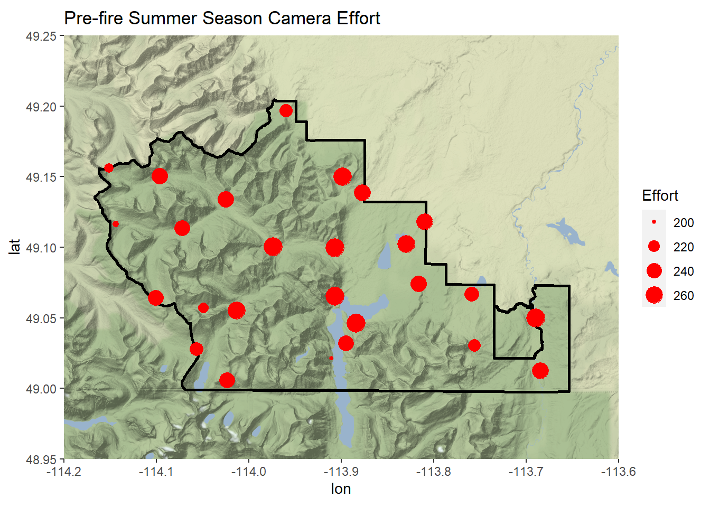

2 - Visualize the Experimental Design
Study Area Map

Figure - Waterton Lakes National Park (solid black outline) in southwestern Alberta. Black dashed grids represent 5x5 km camera deployment cells, each cell contains one camera (black and white triangles) within its bounds. The 2017 Kenow wildfire burn area is represented by the red polygon.
Camera Effort (Sampling Time)
In this section I will be creating maps for each time-period (Pre-fire/Post-fire) and each season (Spring/Summer/Autumn). Each map below shows the spatial layout of the cameras on the Waterton Lakes National Park landscape. The size of each point is representative of the number of days that camera was successfully operating in that specific time-period and season. (Note that in the code time-period is called Status, I will edit this at a later date)
Preparing the Data
library(lattice)
library(ggplot2)
library(ggmap)
library(maptools)
library(sp)
library(rgdal)
library(knitr)
# Reading in the weekly effort data, camera location data, and the Waterton Lakes National Park (WLNP) shapefile.
Data<-read.csv("./Data/3_Weekly_Effort.csv",header=TRUE,stringsAsFactors = FALSE)
Locations<-read.csv("./Data/ParksCanadaCameraLocations.csv",header=TRUE,stringsAsFactors = FALSE)
shpWaterton<-readOGR("./Data/Waterton_Polygon/WatertonLakesNationalPark.shp")# Assigning the coordinate reference system the projection lat long in datum WGS 84.
WGS84 <-CRS("+proj=longlat +datum=WGS84")
# Transforming the Waterton Lakes Shapefile into the appropriate coordinate reference system.
WatertonRePro<-spTransform(shpWaterton,CRSobj = WGS84)
# Fortifying the shapefile allowing it to be projected. This fortify causes the shapefile to become a data frame.
shapefileWaterton<-fortify(WatertonRePro)
# Keeping only the years of interest both pre and post fire. (Pre-fire = 2012-2014 and Post-fire = 2018-2020)
Dates<-Data[which(Data$Year %in% c("2012","2013","2014","2018","2019","2020")),]
# Aggregating the effort data across camera codes, season, and time-periods
Aggregated<-aggregate(Effort_per_week ~ Camera_Code + Season + Status, data = Dates, sum)
# Changing the column name (Name) in locations to Camera_Code for the merge
names(Locations)[names(Locations) == "Name"] <- "Camera_Code"
# Joining the location data (latitude,longitude) to the effort data
Merged<-merge(Aggregated,Locations, by = "Camera_Code")
# Sub-setting to only the required columns of data.
S<-Merged[,c(1:4,8:9)]
# Changing the name of the "effort per week" column into just "effort"
names(S)[names(S) == "Effort_per_week"] <- "Effort"
# Sub-setting the data into separate data frames by season and time-period
PreSpring<-S[which(S$Season == "Spring" & S$Status == "Prefire"),]
PreSummer<-S[which(S$Season == "Summer" & S$Status == "Prefire"),]
PreAutumn<-S[which(S$Season == "Autumn" & S$Status == "Prefire"),]
PostSpring<-S[which(S$Season == "Spring" & S$Status == "Postfire"),]
PostSummer<-S[which(S$Season == "Summer" & S$Status == "Postfire"),]
PostAutumn<-S[which(S$Season == "Autumn" & S$Status == "Postfire"),]Mapping the Data
# Set a bounding box for the map. This is set to include all of Waterton plus some buffer.
bbox<-c(left = -114.2, bottom = 48.95, right = -113.6, top = 49.25)
# Creating the maps for the spring season both pre-fire and post-fire.
PreSpringEffort = ggmap(get_stamenmap(bbox, maptype = "terrain-background", zoom = 12))+
geom_path(data = shapefileWaterton, aes(x = long, y = lat, group = group),size = 1)+
geom_point(data = PreSpring, aes(x = Longitude, y = Latitude, size = Effort),colour = "red") +
ggtitle("Pre-fire Spring Season Camera Effort")
PostSpringEffort = ggmap(get_stamenmap(bbox, maptype = "terrain-background", zoom = 12))+
geom_path(data = shapefileWaterton, aes(x = long, y = lat, group = group),size = 1)+
geom_point(data = PostSpring, aes(x = Longitude, y = Latitude, size = Effort),colour = "red") +
ggtitle("Post-fire Spring Season Camera Effort")# Set a bounding box for the map. This is set to include all of Waterton plus some buffer.
bbox<-c(left = -114.2, bottom = 48.95, right = -113.6, top = 49.25)
# Creating the maps for the spring season both pre-fire and post-fire.
PreSummerEffort = ggmap(get_stamenmap(bbox, maptype = "terrain-background", zoom = 12))+
geom_path(data = shapefileWaterton, aes(x = long, y = lat, group = group),size = 1)+
geom_point(data = PreSummer, aes(x = Longitude, y = Latitude, size = Effort),colour = "red") +
ggtitle("Pre-fire Summer Season Camera Effort")
PostSummerEffort = ggmap(get_stamenmap(bbox, maptype = "terrain-background", zoom = 12))+
geom_path(data = shapefileWaterton, aes(x = long, y = lat, group = group),size = 1)+
geom_point(data = PostSummer, aes(x = Longitude, y = Latitude, size = Effort),colour = "red") +
ggtitle("Post-fire Summer Season Camera Effort")
# Set a bounding box for the map. This is set to include all of Waterton plus some buffer.
bbox<-c(left = -114.2, bottom = 48.95, right = -113.6, top = 49.25)
# Creating the maps for the spring season both pre-fire and post-fire.
PreAutumnEffort = ggmap(get_stamenmap(bbox, maptype = "terrain-background", zoom = 12))+
geom_path(data = shapefileWaterton, aes(x = long, y = lat, group = group),size = 1)+
geom_point(data = PreAutumn, aes(x = Longitude, y = Latitude, size = Effort),colour = "red") +
ggtitle("Pre-fire Autumn Season Camera Effort")
PostAutumnEffort = ggmap(get_stamenmap(bbox, maptype = "terrain-background", zoom = 12))+
geom_path(data = shapefileWaterton, aes(x = long, y = lat, group = group),size = 1)+
geom_point(data = PostAutumn, aes(x = Longitude, y = Latitude, size = Effort),colour = "red") +
ggtitle("Post-fire Autumn Season Camera Effort")Interpretation and Action
It appears that there are some seasons which have low camera effort which is most likely due to a malfunctioning or non-operating camera. These differences in camera effort will be controlled for in my model with the addition of an offset predictor of survey effort (Number of Camera Operating Days). These differences in effort should not affect the results of my models. No action will be taken.